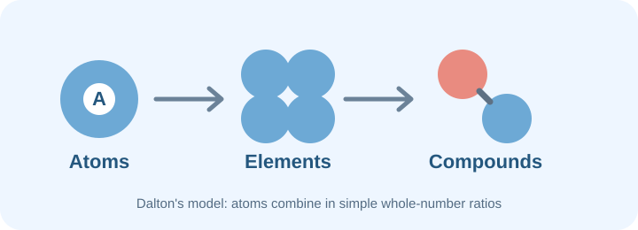

CHEMISTRY · QUICK REVISION
Dalton Atomic Theory
Key postulates, examples and limitations in one short sheet.
Dalton's atomic model

Atoms are the basic particles of matter. Atoms combine in simple whole-number ratios to form compounds.
Five key postulates
- All matter is made of tiny particles called atoms.
- Atoms were considered indivisible and indestructible in Dalton's original model.
- Atoms of the same element were considered identical in mass and properties.
- Atoms of different elements have different masses and properties.
- Compounds form when atoms combine in simple whole-number ratios; chemical reactions rearrange atoms.
Example
Water: H₂O
Hydrogen and oxygen combine in a fixed 2:1 atom ratio.
Hydrogen and oxygen combine in a fixed 2:1 atom ratio.
Carbon dioxide: CO₂
Carbon and oxygen combine in a fixed 1:2 atom ratio.
Carbon and oxygen combine in a fixed 1:2 atom ratio.
Limitations of the original theory
- Atoms are divisible into subatomic particles.
- Atoms of the same element can have different masses (isotopes).
- Atoms of different elements can have the same mass number (isobars).
- Nuclear reactions can change one element into another.
Remember for exams
- Dalton proposed his atomic theory in the early 19th century (1803).
- Law of conservation of mass: atoms are rearranged, not created or destroyed in ordinary chemical reactions.
- Law of definite proportions: a compound has a fixed composition by mass.
- Modern atomic theory updates Dalton's original indivisibility and identical-atom ideas.
SkillUp Chemistry · Dalton Atomic Theory